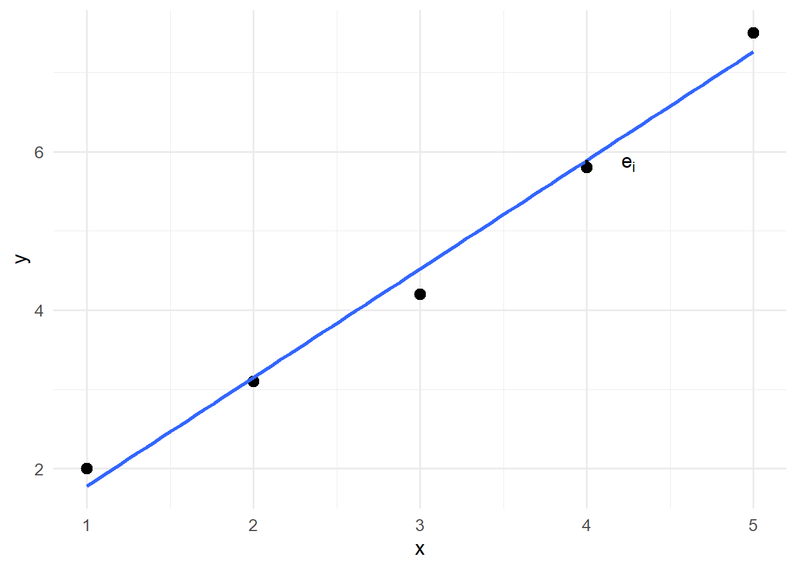
19 Diagnóstico do Modelo de Regressão
19.1 Motivação e objetivos do diagnóstico
Nos capítulos anteriores, estudamos como estimar modelos de regressão, interpretar coeficientes, realizar inferência e comparar modelos concorrentes. Entretanto, mesmo após a escolha de um modelo aparentemente adequado, ainda permanece uma questão importante: as hipóteses utilizadas para justificar os resultados inferenciais são compatíveis com os dados observados?
Grande parte dos resultados discutidos até aqui depende de hipóteses sobre o comportamento dos erros aleatórios. Quando essas hipóteses não são razoáveis, testes de hipóteses, intervalos de confiança e previsões podem tornar-se menos confiáveis, mesmo que o modelo apresente bom ajuste aos dados observados (Kutner et al., 2005; Montgomery; Peck; Vining, 2021).
A análise de diagnóstico tem como objetivo investigar a adequação do modelo ajustado e identificar possíveis problemas que possam comprometer a interpretação dos resultados. Em particular, busca-se avaliar se:
- a relação entre a resposta e as covariáveis foi adequadamente especificada;
- a variância dos erros pode ser considerada aproximadamente constante;
- a hipótese de normalidade é plausível para fins inferenciais;
- existem observações atípicas ou influentes;
- as conclusões obtidas dependem excessivamente de poucas observações.
É importante destacar que o diagnóstico não deve ser interpretado como um conjunto de testes destinados a “aprovar” ou “reprovar” um modelo. O objetivo é compreender como o modelo se comporta diante dos dados e identificar situações em que adaptações, transformações ou métodos alternativos possam ser necessários (Cook; Weisberg, 1982; Fox; Weisberg, 2019).
Assim como a estimação e a inferência, o diagnóstico faz parte do processo de modelagem. Na prática, a construção de um modelo costuma envolver sucessivos ciclos de ajuste, avaliação e refinamento até que se obtenha uma representação satisfatória do fenômeno estudado.
19.2 O que um diagnóstico procura responder?
A análise de diagnóstico procura responder algumas perguntas fundamentais sobre o modelo ajustado.
A primeira delas é se a forma funcional adotada parece compatível com os dados observados. Mesmo quando os coeficientes são significativos, padrões sistemáticos nos resíduos podem indicar que relações não lineares foram ignoradas.
Outra questão importante diz respeito à variabilidade dos erros. Muitos procedimentos inferenciais assumem que os erros possuem variância constante. Quando essa hipótese não é razoável, os erros padrão dos estimadores podem tornar-se inadequados.
Também é comum investigar se a distribuição dos erros apresenta desvios importantes da normalidade. Embora a regressão linear seja relativamente robusta a pequenas violações dessa hipótese, desvios severos podem afetar procedimentos inferenciais em amostras pequenas.
Além disso, algumas observações podem exercer influência desproporcional sobre os coeficientes estimados. Nessas situações, pequenas alterações nos dados podem produzir mudanças substanciais nos resultados do modelo.
Essas questões motivam grande parte das ferramentas diagnósticas estudadas em regressão. Algumas são baseadas em resíduos, outras utilizam medidas de influência ou estatísticas derivadas da matriz de projeção. Em todos os casos, o objetivo é compreender melhor o comportamento do modelo ajustado.
19.3 Resíduos e adequação do modelo
Grande parte das ferramentas de diagnóstico em regressão é construída a partir dos resíduos. Por essa razão, o estudo dessas quantidades constitui o ponto de partida para a avaliação da adequação de um modelo ajustado.
Lembre que, para cada observação, o modelo fornece um valor ajustado
\[ \hat Y_i. \]
A diferença entre o valor observado e o valor ajustado é denominada resíduo:
\[ e_i = Y_i-\hat Y_i. \]
Os resíduos podem ser interpretados como estimativas dos erros aleatórios não observáveis do modelo. Como os erros verdadeiros
\[ \varepsilon_i \]
não são conhecidos, os resíduos tornam-se a principal fonte de informação para investigar possíveis violações das hipóteses do modelo (Montgomery; Peck; Vining, 2021; Seber; Lee, 2003).
Quando o modelo é adequado, espera-se que os resíduos apresentem comportamento essencialmente aleatório, sem padrões sistemáticos. Em contrapartida, estruturas visíveis nos resíduos frequentemente indicam problemas de especificação, heterocedasticidade ou observações influentes.
19.3.1 Resíduo ordinário
O resíduo ordinário é definido por
\[ e_i = Y_i-\hat Y_i. \]
Seu sinal indica se o modelo subestimou ou superestimou a observação:
- \(e_i>0\): o valor observado ficou acima do valor ajustado;
- \(e_i<0\): o valor observado ficou abaixo do valor ajustado;
- \(e_i=0\): coincidência entre observação e ajuste.
A representação gráfica do resíduo é mostrada na Figura abaixo.
A distância vertical entre o ponto observado e a reta ajustada corresponde ao resíduo da observação.
Embora os resíduos ordinários sejam úteis para visualização inicial, eles apresentam uma limitação importante: sua variabilidade não é constante entre as observações.
De fato,
\[ Var(e_i) = \sigma^2(1-h_{ii}), \]
em que \(h_{ii}\) representa o elemento diagonal da matriz de projeção
\[ \mathbf H = \mathbf X (\mathbf X^\top\mathbf X)^{-1} \mathbf X^\top. \]
Consequentemente, observações diferentes podem possuir resíduos naturalmente mais ou menos variáveis, dificultando comparações diretas entre eles.
Essa limitação motiva a construção de resíduos padronizados, discutidos a seguir.
19.3.2 Resíduos padronizados
Os resíduos padronizados são definidos por
\[ r_i = \frac{e_i} {\hat\sigma\sqrt{1-h_{ii}}}, \]
em que:
- \(e_i\) é o resíduo ordinário;
- \(\hat\sigma\) é o erro padrão residual;
- \(h_{ii}\) é a alavancagem da observação.
Essa transformação produz resíduos em uma escala aproximadamente comparável entre diferentes observações.
Quando as hipóteses do modelo são razoáveis, espera-se que a maioria dos resíduos padronizados esteja concentrada aproximadamente entre
\[ -2 \quad \text{e} \quad 2. \]
Valores mais extremos podem indicar observações atípicas ou possíveis inadequações do modelo.
A Figura abaixo apresenta um exemplo típico de gráfico de resíduos padronizados.
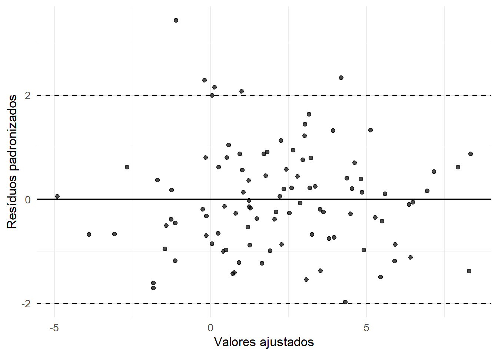
Esse gráfico será utilizado diversas vezes ao longo do capítulo, pois permite investigar simultaneamente possíveis desvios de linearidade, heterocedasticidade e observações discrepantes.
19.3.3 Resíduos studentizados (externos)
Os resíduos padronizados utilizam uma única estimativa da variância residual, obtida a partir de todas as observações da amostra. Em algumas situações, entretanto, uma observação potencialmente discrepante pode influenciar essa estimativa, dificultando sua própria identificação.
Para contornar esse problema, utilizam-se os resíduos studentizados externos, definidos por
\[ t_i = \frac{e_i} {\hat\sigma_{(i)} \sqrt{1-h_{ii}}}, \]
em que
\[ \hat\sigma_{(i)} \]
é a estimativa da variância residual obtida após remover temporariamente a observação \(i\) do ajuste.
Dessa forma, cada observação é avaliada em relação a um modelo que não foi influenciado por ela própria.
Uma propriedade importante é que, sob as hipóteses do modelo normal,
\[ t_i \]
segue aproximadamente uma distribuição \(t\) de Student com
\[ n-p-2 \]
graus de liberdade (Cook; Weisberg, 1982; Montgomery; Peck; Vining, 2021).
Essa característica permite utilizar os resíduos studentizados para identificar observações potencialmente discrepantes.
Como regra prática, valores absolutos superiores a
\[ 2 \]
ou
\[ 3 \]
merecem investigação mais detalhada.
Entretanto, assim como ocorre em outros procedimentos diagnósticos, não existe um limite universal capaz de classificar automaticamente uma observação como problemática. O contexto da aplicação e a análise conjunta de outras medidas devem sempre ser considerados.
Os resíduos studentizados são particularmente úteis quando o objetivo é identificar observações atípicas na direção vertical, isto é, observações cujos valores observados diferem substancialmente daqueles previstos pelo modelo.
19.4 Diagnóstico das suposições
A análise diagnóstica não deve ser interpretada como uma sequência de testes independentes destinados a aprovar ou reprovar um modelo. O objetivo é reunir evidências que permitam avaliar se as hipóteses adotadas constituem aproximações razoáveis para os dados observados (Fox; Weisberg, 2019; Montgomery; Peck; Vining, 2021).
Em geral, a investigação concentra-se em quatro aspectos principais:
- adequação da forma funcional do modelo;
- constância da variância dos erros;
- normalidade dos erros;
- independência entre observações.
Embora cada hipótese possa ser avaliada separadamente, os diagnósticos costumam ser interpretados de forma conjunta. Um mesmo padrão residual pode indicar mais de um problema simultaneamente.
19.4.1 Linearidade
O Modelo de Regressão Linear Múltipla assume que a média da variável resposta pode ser representada por uma combinação linear dos parâmetros. Em termos práticos, isso significa que a forma funcional especificada deve ser capaz de descrever adequadamente a relação entre a resposta e as covariáveis incluídas no modelo.
Quando essa hipótese é inadequada, os resíduos frequentemente apresentam padrões sistemáticos que indicam a existência de estrutura ainda não capturada pelo modelo. O principal instrumento gráfico para investigar essa hipótese é o gráfico de resíduos versus valores ajustados.
Quando o modelo está adequadamente especificado, espera-se observar uma nuvem aproximadamente aleatória em torno da linha horizontal correspondente ao valor zero.
Por outro lado, padrões curvilíneos, tendências crescentes ou decrescentes e agrupamentos sistemáticos sugerem que a forma funcional adotada pode ser inadequada.
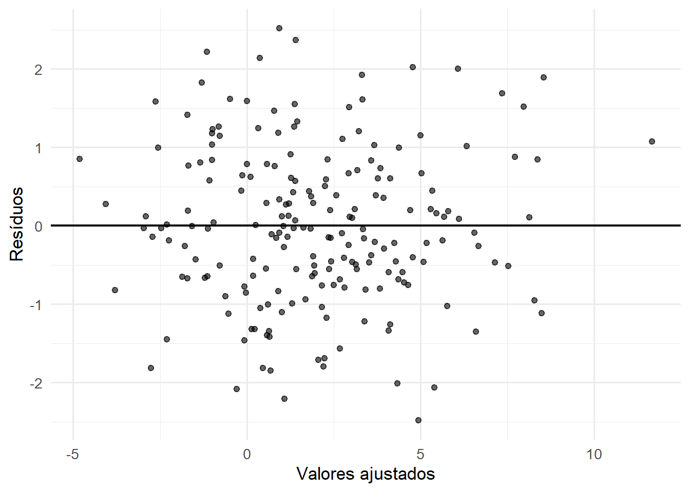
A Figura abaixo apresenta uma situação distinta, na qual os resíduos exibem um padrão sistemático.
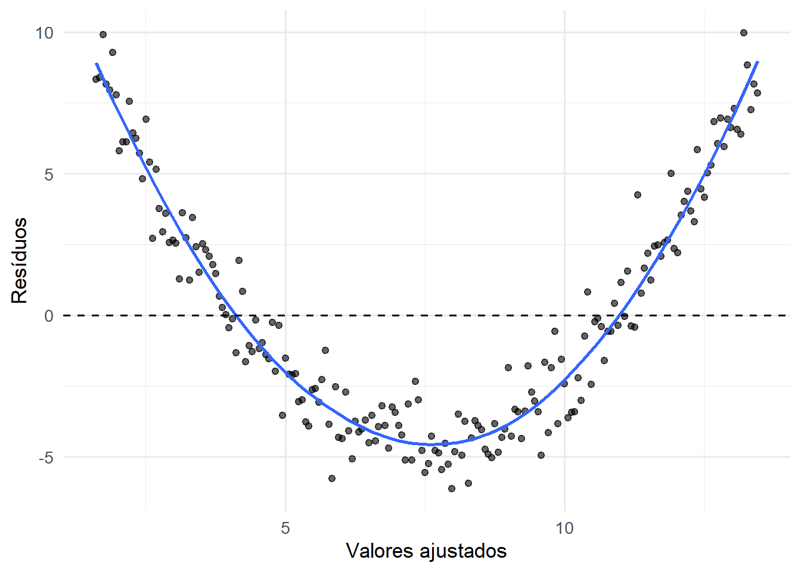
A identificação de padrões sistemáticos nos resíduos não implica necessariamente que o modelo esteja incorreto. Entretanto, constitui evidência de que alguma estrutura presente nos dados não está sendo adequadamente representada.
Entre as alternativas mais comuns para lidar com esse problema estão:
- inclusão de termos polinomiais;
- transformações de variáveis;
- inclusão de novas covariáveis;
- utilização de modelos mais flexíveis.
A decisão deve sempre considerar o contexto da aplicação e os objetivos da análise.
19.4.2 Homocedasticidade
Uma das hipóteses principais do modelo clássico de regressão estabelece que a variância dos erros permanece constante ao longo de todas as observações. Formalmente,
\[ Var(\varepsilon_i) = \sigma^2, \qquad i=1,\ldots,n. \]
Essa propriedade é conhecida como homocedasticidade.
Quando a variabilidade dos erros depende dos níveis das covariáveis ou dos valores ajustados, ocorre heterocedasticidade. Nessa situação, algumas regiões dos dados apresentam dispersão maior do que outras.
A presença de heterocedasticidade não introduz viés nos estimadores de mínimos quadrados sob as hipóteses usuais. Entretanto, erros padrão, intervalos de confiança e testes de hipóteses podem tornar-se inadequados, comprometendo a inferência estatística (Kutner et al., 2005; Montgomery; Peck; Vining, 2021).
A forma mais comum de investigar essa hipótese consiste em analisar o gráfico de resíduos versus valores ajustados.
Quando a homocedasticidade é plausível, espera-se que a dispersão dos resíduos permaneça aproximadamente constante ao longo do gráfico.
A Figura abaixo apresenta uma situação compatível com essa hipótese.
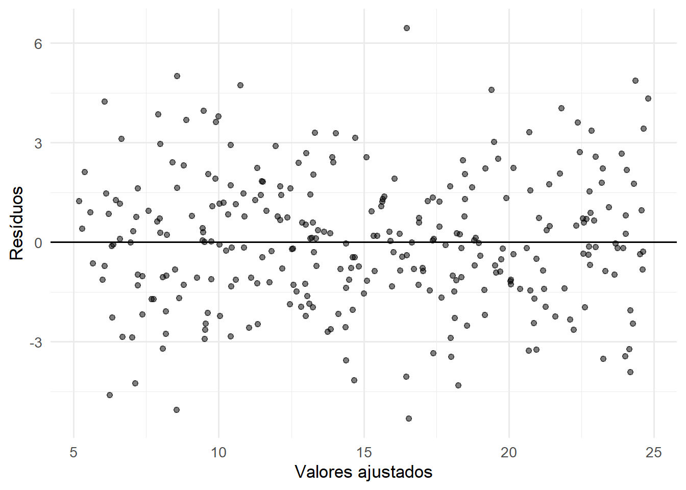
Por outro lado, a Figura abaixo apresenta um padrão clássico de heterocedasticidade.
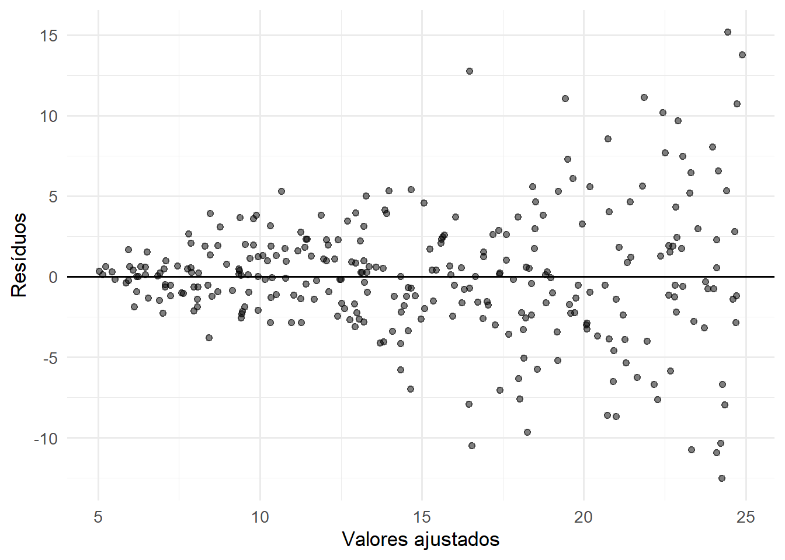
Nesse segundo caso, observa-se que a dispersão dos resíduos aumenta à medida que os valores ajustados crescem. O formato em funil é uma das manifestações mais comuns da heterocedasticidade.
Embora a inspeção gráfica seja extremamente importante, ela pode ser complementada por testes formais.
19.4.3 Teste de Breusch–Pagan
O teste de Breusch–Pagan investiga se a variância dos resíduos permanece constante ou se depende das covariáveis incluídas no modelo (Breusch; Pagan, 1979).
As hipóteses são
\[ H_0: Var(\varepsilon_i) = \sigma^2, \]
contra
\[ H_1: Var(\varepsilon_i) \neq \sigma^2. \]
Sob a hipótese nula, espera-se que a dispersão dos resíduos não apresente associação sistemática com as variáveis explicativas.
A aplicação do teste em R pode ser realizada por meio do pacote lmtest.
A tabela a seguir apresenta o resultado do teste de Breusch–Pagan para o modelo que apresentou os residuos heterocedasticos na figura anterior.
| statistic | p.value | parameter | method |
|---|---|---|---|
| 55.0439 | 0 | 1 | studentized Breusch-Pagan test |
Valores-\(p\) pequenos fornecem evidências de que a variância dos erros pode depender das covariáveis ou dos valores ajustados.
Entretanto, assim como ocorre em outros procedimentos diagnósticos, a interpretação não deve depender exclusivamente do resultado do teste. Em amostras muito grandes, pequenas violações podem produzir rejeições da hipótese nula, mesmo quando seu impacto prático é reduzido.
Por essa razão, recomenda-se interpretar conjuntamente:
- o gráfico de resíduos;
- o contexto da aplicação;
- o resultado do teste formal.
Quando há evidências consistentes de heterocedasticidade, algumas alternativas incluem:
- transformação da variável resposta;
- transformação de covariáveis;
- mínimos quadrados ponderados;
- modelagem explícita da variância;
- utilização de erros padrão robustos.
A escolha da estratégia depende dos objetivos da análise e da natureza do problema investigado.
19.4.4 Normalidade
No modelo clássico de regressão, assume-se que
\[ \varepsilon_i \sim N(0,\sigma^2). \]
Sob essa hipótese, diversas estatísticas inferenciais possuem distribuições exatas conhecidas, justificando o uso das distribuições \(t\) e \(F\) estudadas nos capítulos anteriores.
É importante destacar que a hipótese de normalidade refere-se aos erros aleatórios e não à variável resposta ou às covariáveis. Assim, não é necessário que os dados observados apresentem distribuição normal para que o modelo seja utilizado.
Além disso, a regressão linear costuma apresentar razoável robustez a desvios moderados da normalidade, especialmente em amostras grandes. Por essa razão, pequenas discrepâncias raramente comprometem uma análise (Montgomery; Peck; Vining, 2021; Seber; Lee, 2003).
A avaliação da normalidade é geralmente realizada por meio de gráficos e testes formais. O gráfico mais utilizado é o gráfico quantil-quantil normal, conhecido como gráfico Q-Q. Nesse gráfico, os quantis observados dos resíduos são comparados com os quantis esperados sob uma distribuição normal.
Quando a hipótese de normalidade é plausível, os pontos tendem a se distribuir próximos da reta de referência.
A Figura abaixo apresenta um exemplo compatível com normalidade.
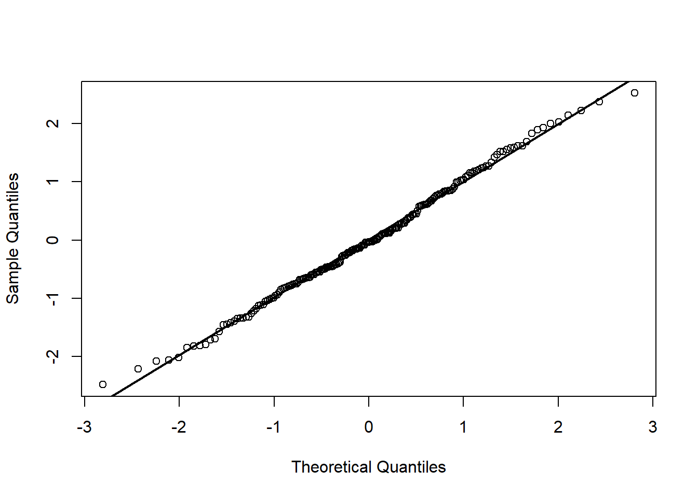
Na Figura anterior, os pontos permanecem próximos da reta teórica, sugerindo compatibilidade com a distribuição normal.
A Figura a seguir apresenta uma situação distinta.
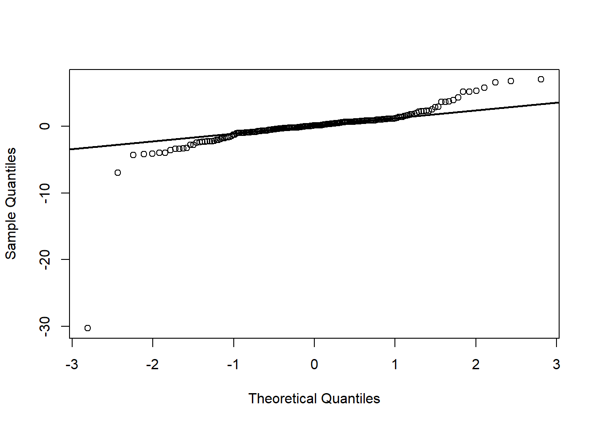
Nesse caso, observa-se um afastamento sistemático da reta de referência, principalmente nas extremidades. Esse padrão sugere a presença de caudas mais pesadas do que aquelas previstas pela distribuição normal.
Embora o gráfico Q-Q seja uma ferramenta extremamente informativa, ele pode ser complementado por testes formais.
19.4.5 Teste de Shapiro–Wilk
O teste de Shapiro–Wilk é um dos procedimentos mais utilizados para avaliar a hipótese de normalidade (Shapiro; Wilk, 1965).
As hipóteses são
\[ H_0: \text{os dados são compatíveis com uma distribuição normal}, \]
contra
\[ H_1: \text{os dados não seguem distribuição normal}. \]
Aplicado aos resíduos do modelo, o teste pode ser realizado em R da seguinte forma.
| statistic | p.value | method |
|---|---|---|
| 0.6124 | 0 | Shapiro-Wilk normality test |
Valores-\(p\) pequenos sugerem que a distribuição dos resíduos pode apresentar desvios relevantes da normalidade.
Entretanto, assim como ocorre com outros testes diagnósticos, a interpretação exige cautela.
Em amostras pequenas, o teste pode não detectar desvios relevantes da normalidade. Em amostras muito grandes, pequenas discrepâncias sem importância prática podem produzir rejeições da hipótese nula.
Por essa razão, recomenda-se interpretar conjuntamente:
- o gráfico Q-Q;
- o contexto da aplicação;
- o resultado do teste formal.
Em muitos problemas de regressão, desvios moderados da normalidade possuem impacto limitado sobre os resultados inferenciais. Situações envolvendo forte assimetria, caudas pesadas ou presença de observações extremas costumam merecer maior atenção.
Quando a hipótese de normalidade parece inadequada, algumas alternativas incluem:
- transformações da variável resposta;
- utilização de modelos com distribuições alternativas;
- métodos robustos;
- procedimentos de reamostragem.
A escolha depende da intensidade da violação observada e dos objetivos da análise.
19.4.6 Independência
Formalmente,
\[ Cov( \varepsilon_i, \varepsilon_j ) = 0, \qquad i \neq j. \]
Essa hipótese é particularmente importante em estudos envolvendo séries temporais, dados espaciais ou observações coletadas sequencialmente.
Quando existe dependência entre os erros, os estimadores de mínimos quadrados podem permanecer não viesados, mas erros padrão, intervalos de confiança e testes de hipóteses podem tornar-se inadequados (Kutner et al., 2005; Montgomery; Peck; Vining, 2021).
A investigação da independência depende do contexto da aplicação.
Em muitos estudos observacionais ou experimentais obtidos por amostragem aleatória, a independência é uma hipótese plausível. Em contrapartida, em séries temporais, medições repetidas e dados espaciais, a presença de dependência entre observações é relativamente comum.
Uma forma simples de investigar essa hipótese consiste em analisar os resíduos na ordem em que os dados foram observados.
Quando a independência é razoável, espera-se que os resíduos oscilem aleatoriamente em torno de zero, sem padrões persistentes.
A Figura abaixo apresenta uma situação compatível com independência.
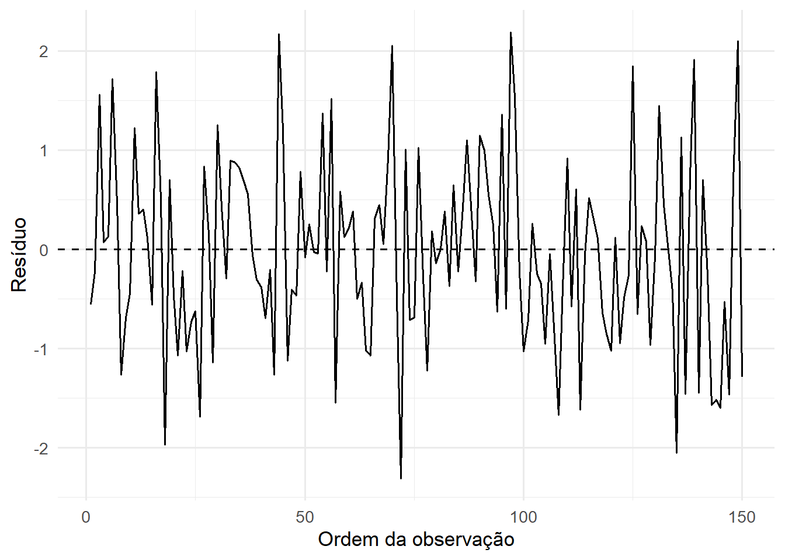
Na Figura anterior, os resíduos alternam-se de forma aparentemente aleatória, sem tendência persistente.
A Figura a seguir apresenta uma situação distinta.
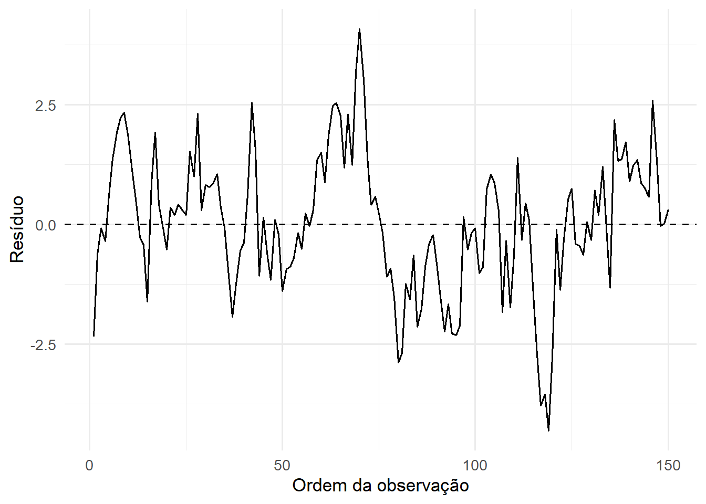
Nesse caso, observa-se a formação de sequências relativamente longas de resíduos positivos e negativos, sugerindo autocorrelação.
Embora a inspeção visual seja extremamente útil, ela pode ser complementada por testes formais.
19.4.7 Teste de Durbin–Watson
O teste de Durbin–Watson é uma das ferramentas mais utilizadas para investigar autocorrelação de primeira ordem nos resíduos (Durbin; Watson, 1951).
As hipóteses podem ser escritas como
\[ H_0: \rho = 0, \]
contra
\[ H_1: \rho \neq 0, \]
em que \(\rho\) representa a correlação entre resíduos consecutivos.
A estatística do teste é dada por
\[ DW = \frac{ \sum_{i=2}^{n} (e_i-e_{i-1})^2 }{ \sum_{i=1}^{n} e_i^2 }. \]
Valores próximos de 2 sugerem ausência de autocorrelação. Na prática, o interesse costuma estar na identificação de autocorrelação positiva, pois ela é a forma mais frequente de dependência observada em séries temporais.
Em termos gerais:
- valores próximos de 2 indicam independência;
- valores substancialmente menores que 2 sugerem autocorrelação positiva;
- valores substancialmente maiores que 2 sugerem autocorrelação negativa.
Em R, o teste pode ser realizado por meio do pacote lmtest.
| statistic | p.value | method | alternative |
|---|---|---|---|
| 2.0245 | 0.5708 | Durbin-Watson test | true autocorrelation is greater than 0 |
Valores-\(p\) pequenos fornecem evidências contra a hipótese de independência.
Assim como nos demais diagnósticos, o resultado do teste deve ser interpretado juntamente com os gráficos e com o conhecimento do processo de coleta dos dados.
Quando há evidências de dependência entre observações, algumas alternativas incluem:
- incorporar estruturas de correlação ao modelo;
- utilizar modelos para séries temporais;
- empregar modelos mistos ou longitudinais;
- revisar o processo de amostragem e coleta de dados.
19.5 Multicolinearidade
As hipóteses discutidas anteriormente estão relacionadas ao comportamento dos erros aleatórios. A multicolinearidade, por sua vez, está associada à estrutura das covariáveis presentes na matriz de planejamento.
Esse fenômeno ocorre quando duas ou mais variáveis explicativas apresentam forte associação linear entre si.
Em situações extremas, uma variável pode ser aproximadamente expressa como combinação linear das demais.
A presença de multicolinearidade não viola diretamente as hipóteses do modelo nem produz viés nos estimadores de mínimos quadrados. Entretanto, ela pode aumentar substancialmente a variabilidade das estimativas e dificultar a interpretação individual dos coeficientes (Kutner et al., 2005; Montgomery; Peck; Vining, 2021).
Entre as consequências mais comuns destacam-se:
- aumento dos erros padrão;
- ampliação dos intervalos de confiança;
- redução do poder dos testes individuais;
- instabilidade dos coeficientes estimados;
- mudanças expressivas nas estimativas após pequenas alterações nos dados.
Por essa razão, modelos com elevado \(R^2\) podem apresentar coeficientes aparentemente não significativos quando existe forte multicolinearidade.
Embora o VIF seja uma medida numérica, a multicolinearidade pode ser compreendida geometricamente como uma forte associação linear entre covariáveis.
A Figura abaixo apresenta uma situação em que duas covariáveis carregam praticamente a mesma informação. Nesses casos, torna-se difícil separar individualmente o efeito de cada variável sobre a resposta, o que aumenta a variabilidade dos coeficientes estimados.
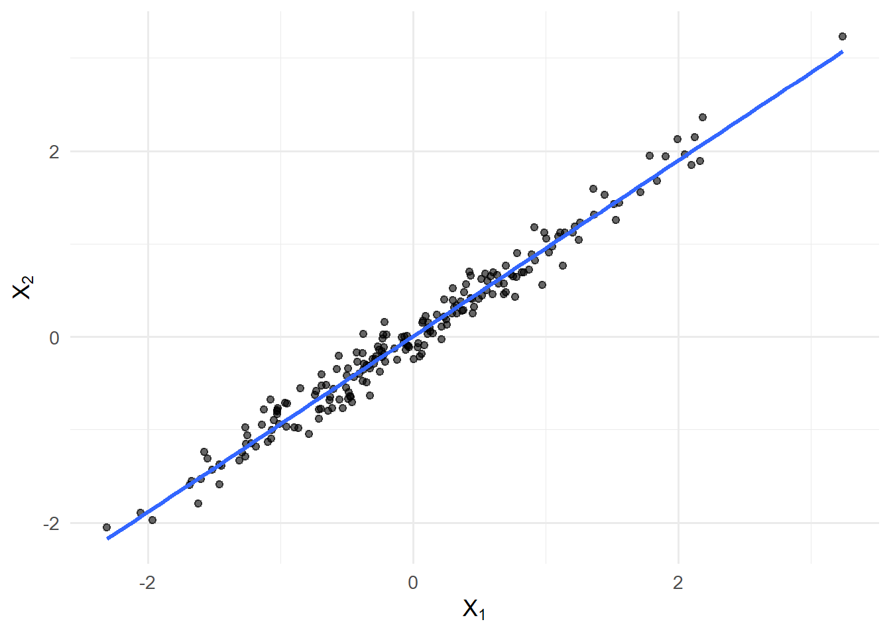
Observa-se que pequenas alterações em uma das variáveis estão fortemente associadas a alterações na outra. Essa redundância de informação é a principal causa da multicolinearidade.
19.5.1 Fator de Inflação da Variância (VIF)
Uma medida amplamente utilizada para investigar multicolinearidade é o Fator de Inflação da Variância (Variance Inflation Factor).
Para a variável explicativa \(X_j\), define-se
\[ VIF_j = \frac{1} {1-R_j^2}, \]
em que \(R_j^2\) corresponde ao coeficiente de determinação obtido ao regredir \(X_j\) sobre todas as demais covariáveis do modelo.
Quando \(X_j\) é praticamente independente das demais variáveis, temos
\[ R_j^2 \approx 0, \]
e consequentemente
\[ VIF_j \approx 1. \]
À medida que a associação entre as covariáveis aumenta, o valor de \(R_j^2\) cresce e o VIF torna-se maior.
Embora não exista um limite universalmente aceito, frequentemente utilizam-se as seguintes referências:
| VIF | Interpretação |
|---|---|
| próximo de 1 | ausência de multicolinearidade relevante |
| entre 1 e 5 | associação moderada |
| acima de 5 | possível problema |
| acima de 10 | forte evidência de multicolinearidade |
Em R, os VIFs podem ser obtidos por meio do pacote car.
| Variável | VIF |
|---|---|
| x1 | 36.67 |
| x2 | 36.67 |
Valores elevados de VIF não implicam necessariamente que uma variável deva ser removida. Em muitos estudos, covariáveis fortemente correlacionadas podem ser relevantes e devem permanecer no modelo.
Além disso, em modelos que incluem termos de interação, polinômios ou variáveis derivadas de outras covariáveis, valores elevados de VIF podem surgir naturalmente devido à própria estrutura do modelo. Nesses casos, a interpretação deve considerar o objetivo da modelagem e não apenas limites numéricos arbitrários.
O diagnóstico de multicolinearidade deve ser interpretado como um auxílio à compreensão da estabilidade das estimativas e não como um procedimento automático de seleção de variáveis.
19.6 Observações influentes
Nem todas as observações exercem o mesmo impacto sobre o ajuste de um modelo.
Alguns pontos possuem pouca capacidade de alterar os coeficientes estimados, enquanto outros podem produzir mudanças substanciais mesmo quando removidos individualmente.
Por essa razão, além da análise dos resíduos, é importante investigar a influência de observações específicas sobre os resultados da regressão.
Uma observação pode ser considerada influente quando exerce efeito desproporcional sobre:
- os coeficientes estimados;
- os valores ajustados;
- os testes de hipóteses;
- os intervalos de confiança;
- as previsões do modelo.
É importante distinguir observações influentes de observações atípicas.
Uma observação pode apresentar grande resíduo sem alterar significativamente o ajuste do modelo. Da mesma forma, uma observação pode exercer forte influência sobre os coeficientes mesmo apresentando resíduo relativamente pequeno.
Essa distinção motiva o estudo de medidas específicas de influência.
19.6.1 Alavancagem
A influência potencial de uma observação depende não apenas do tamanho do seu resíduo, mas também de sua posição no espaço das covariáveis.
Observações localizadas em regiões pouco representadas pelos demais dados possuem maior capacidade de alterar o ajuste do modelo. Essa característica é conhecida como alavancagem.
A medida de alavancagem da observação \(i\) é dada pelo elemento diagonal da matriz de projeção
\[ \mathbf H = \mathbf X (\mathbf X^\top\mathbf X)^{-1} \mathbf X^\top. \]
Denotando por \(h_{ii}\) o elemento correspondente à observação \(i\), temos
\[ 0 \le h_{ii} \le 1. \]
Valores elevados indicam observações localizadas em regiões extremas do espaço das covariáveis.
Uma propriedade importante é
\[ \sum_{i=1}^{n} h_{ii} = p+1, \]
de modo que a alavancagem média é dada por
\[ \bar h = \frac{p+1}{n}. \]
Como regra prática, costuma-se investigar observações para as quais
\[ h_{ii} > 2\frac{p+1}{n} \]
ou
\[ h_{ii} > 3\frac{p+1}{n}. \]
Entretanto, uma observação com elevada alavancagem não é necessariamente problemática.
Se ela seguir o mesmo padrão geral dos dados, poderá contribuir positivamente para a estimação dos parâmetros.
A Figura a seguir ilustra uma observação com elevada alavancagem.
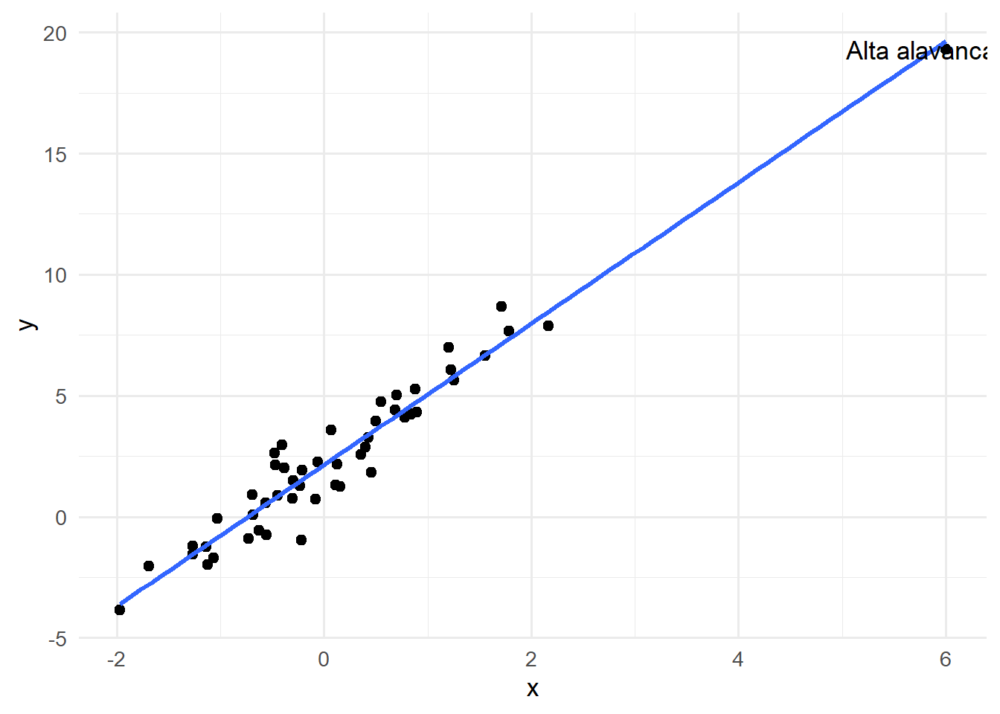
19.6.2 Distância de Cook
A distância de Cook combina informações sobre resíduos e alavancagem em uma única medida de influência (Cook; Weisberg, 1982).
Sua ideia central consiste em avaliar o impacto produzido pela remoção de uma observação sobre os coeficientes estimados.
A distância de Cook da observação \(i\) pode ser escrita como
\[ D_i = \frac{ (\hat{\boldsymbol\beta} - \hat{\boldsymbol\beta}_{(i)})^\top \mathbf X^\top \mathbf X (\hat{\boldsymbol\beta} - \hat{\boldsymbol\beta}_{(i)}) } {(p+1)\hat\sigma^2}, \]
em que
\[ \hat{\boldsymbol\beta}_{(i)} \]
representa o vetor de coeficientes obtido após remover a observação \(i\).
Valores elevados indicam observações capazes de alterar substancialmente o ajuste do modelo.
Duas referências frequentemente utilizadas são
\[ D_i > 1 \]
ou
\[ D_i > \frac{4}{n}. \]
Esses limites devem ser vistos apenas como orientações iniciais e não como critérios rígidos de decisão.
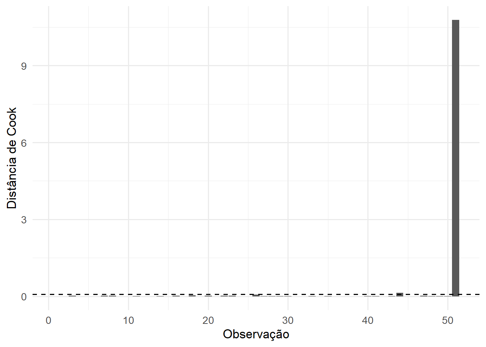
19.6.3 DFBETAS
Enquanto a distância de Cook avalia o impacto global de uma observação sobre o modelo, as medidas DFBETAS investigam o efeito sobre cada coeficiente individualmente.
Para o parâmetro \(\beta_j\), define-se
\[ DFBETAS_{ij} = \frac{ \hat\beta_j - \hat\beta_{j(i)} } {EP(\hat\beta_{j(i)})}. \]
Essa medida quantifica o quanto a observação \(i\) influencia especificamente o coeficiente \(\beta_j\).
Valores absolutos elevados indicam observações capazes de alterar substancialmente a interpretação daquele parâmetro.
Como referência prática, costuma-se investigar observações para as quais
\[ |DFBETAS| > \frac{2}{\sqrt n}. \]
As medidas DFBETAS são particularmente úteis quando o interesse está concentrado em parâmetros específicos do modelo.
19.6.4 DFFITS
Enquanto as medidas DFBETAS avaliam o impacto sobre os coeficientes, a estatística DFFITS investiga o efeito de uma observação sobre seu próprio valor ajustado.
Formalmente,
\[ DFFITS_i = \frac{ \hat Y_i - \hat Y_{i(i)} } { \hat\sigma_{(i)} \sqrt{h_{ii}} }, \]
em que
\[ \hat Y_{i(i)} \]
corresponde ao valor ajustado obtido após remover a observação \(i\).
Valores absolutos elevados indicam observações capazes de alterar substancialmente as previsões produzidas pelo modelo.
Uma regra prática frequentemente utilizada é
\[ |DFFITS| > 2 \sqrt{ \frac{p+1}{n} }. \]
Enquanto a distância de Cook avalia o impacto global de uma observação sobre o ajuste do modelo, o DFFITS concentra-se especificamente em sua influência sobre a própria predição. Assim, duas observações podem apresentar valores semelhantes de distância de Cook e comportamentos distintos em termos de DFFITS.
O DFFITS deve ser interpretado como um indicador de investigação e não como um critério automático para exclusão de observações.
19.6.5 Diagnóstico conjunto
Nenhuma medida diagnóstica deve ser utilizada isoladamente.
Uma observação pode apresentar:
- resíduo elevado e baixa alavancagem;
- elevada alavancagem e pequeno resíduo;
- grande distância de Cook;
- forte influência apenas sobre determinados coeficientes.
Por essa razão, a análise conjunta costuma ser mais informativa do que a inspeção individual de cada indicador.
Uma estratégia frequentemente utilizada consiste em combinar resíduos studentizados e alavancagem em um mesmo gráfico.
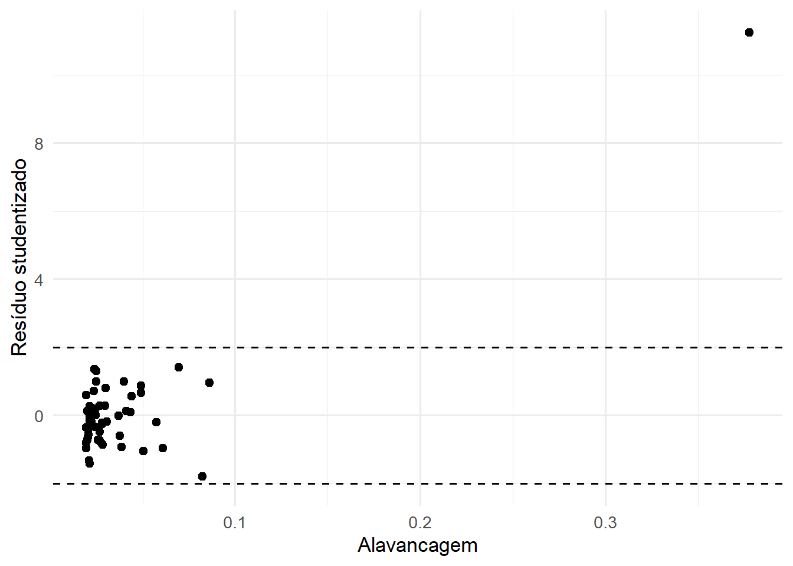
Observações localizadas simultaneamente em regiões de elevada alavancagem e elevados resíduos studentizados costumam exercer maior influência sobre o ajuste.
Entretanto, a identificação de uma observação influente não implica que ela deva ser removida do conjunto de dados.
Antes de qualquer decisão, recomenda-se investigar:
- possíveis erros de digitação;
- problemas de medição;
- inconsistências no processo de coleta;
- características particulares da unidade observada.
Em muitas aplicações, observações influentes representam justamente casos de interesse científico e sua remoção pode levar à perda de informações relevantes (Cook; Weisberg, 1982; Fox; Weisberg, 2019).
19.7 Síntese das ferramentas diagnósticas
A Tabela a seguir resume as principais ferramentas discutidas neste capítulo.
| Objetivo | Ferramenta |
|---|---|
| Linearidade | Resíduos × Ajustados |
| Homocedasticidade | Resíduos × Ajustados; Breusch–Pagan |
| Normalidade | Q-Q Plot; Shapiro–Wilk |
| Independência | Resíduos × Ordem; Durbin–Watson |
| Multicolinearidade | VIF |
| Influência global | Distância de Cook |
| Influência nos coeficientes | DFBETAS |
| Influência nas previsões | DFFITS |
| Influência potencial | Alavancagem |
Nenhuma dessas ferramentas deve ser interpretada isoladamente. O diagnóstico resulta da combinação de evidências gráficas, testes formais e conhecimento do contexto da aplicação.
19.8 Exemplo ilustrativo
Para consolidar os conceitos discutidos neste capítulo, utilizaremos a base Credit, disponível no pacote ISLR.
Nosso foco será a avaliação diagnóstica do modelo, e não a interpretação dos coeficientes estimados. Utilizaremos as ferramentas discutidas ao longo do capítulo para investigar a adequação das principais hipóteses do modelo de regressão.
Consideremos o modelo
\[ Balance = \beta_0 + \beta_1 Income + \beta_2 Rating + \varepsilon. \]
Inicialmente ajustamos o modelo e observamos algumas informações básicas.
| term | estimate | std.error | statistic | p.value |
|---|---|---|---|---|
| (Intercept) | -534.8122 | 21.6027 | -24.7567 | 0 |
| Income | -7.6721 | 0.3785 | -20.2718 | 0 |
| Rating | 3.9493 | 0.0862 | 45.8103 | 0 |
O próximo passo consiste em verificar se existem evidências de violação das hipóteses adotadas pelo modelo.
19.8.1 Linearidade e homocedasticidade
Começamos analisando os resíduos em função dos valores ajustados.
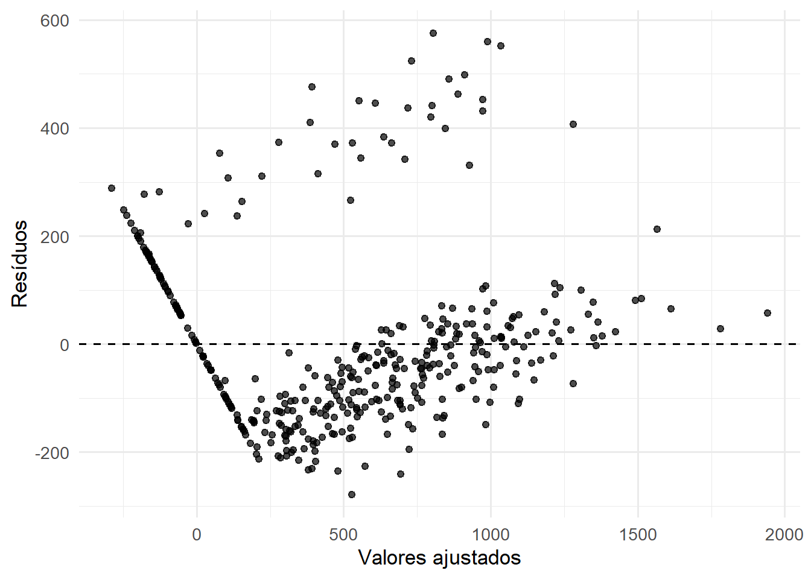
Nesse gráfico buscamos identificar:
- padrões curvilíneos, que podem indicar inadequação da forma funcional;
- mudanças sistemáticas na dispersão dos resíduos, que podem sugerir heterocedasticidade;
- observações discrepantes.
A inspeção visual pode ser complementada pelo teste de Breusch–Pagan.
| statistic | p.value | parameter | method |
|---|---|---|---|
| 0.0328 | 0.9837 | 2 | studentized Breusch-Pagan test |
A interpretação conjunta do gráfico e do teste permite avaliar se a hipótese de variância constante parece razoável.
19.8.2 Normalidade
A seguir, investigamos a compatibilidade dos resíduos com a distribuição normal.
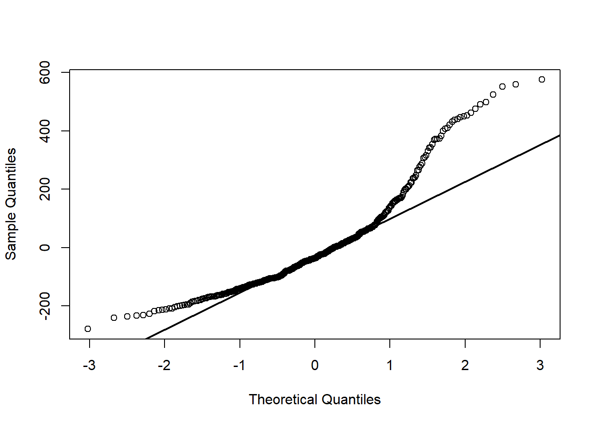
Também podemos utilizar o teste de Shapiro–Wilk.
| statistic | p.value | method |
|---|---|---|
| 0.8908 | 0 | Shapiro-Wilk normality test |
O objetivo não é exigir normalidade perfeita, mas verificar se existem desvios suficientemente fortes para comprometer a inferência baseada nas distribuições \(t\) e \(F\).
19.8.3 Independência
Como a base Credit não corresponde a uma série temporal, a hipótese de independência costuma ser considerada plausível. Ainda assim, podemos ilustrar a aplicação do teste de Durbin–Watson.
| statistic | p.value | method | alternative |
|---|---|---|---|
| 1.8957 | 0.1475 | Durbin-Watson test | true autocorrelation is greater than 0 |
Nesse contexto, o teste é apresentado principalmente para fins ilustrativos, uma vez que a hipótese de autocorrelação costuma ser mais relevante em dados coletados sequencialmente no tempo ou no espaço.
19.8.4 Multicolinearidade
Em seguida, avaliamos a associação entre as covariáveis por meio do Fator de Inflação da Variância.
| Variável | VIF |
|---|---|
| Income | 2.676 |
| Rating | 2.676 |
Valores próximos de 1 indicam baixa associação linear entre as covariáveis. Valores elevados sugerem possível instabilidade nas estimativas dos coeficientes.
19.8.5 Influência e observações atípicas
A distância de Cook permite identificar observações com potencial para alterar substancialmente o ajuste do modelo.
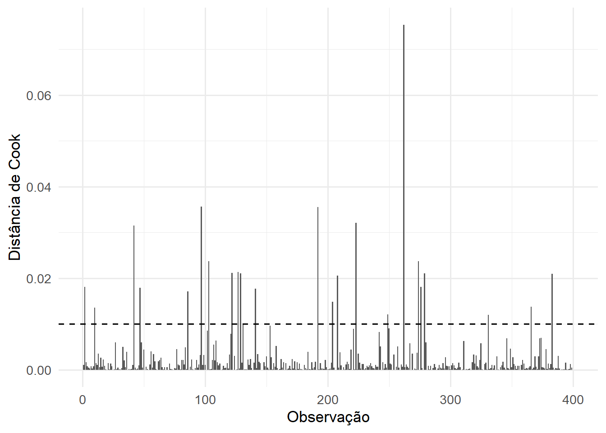
Também podemos combinar resíduos studentizados e alavancagem.
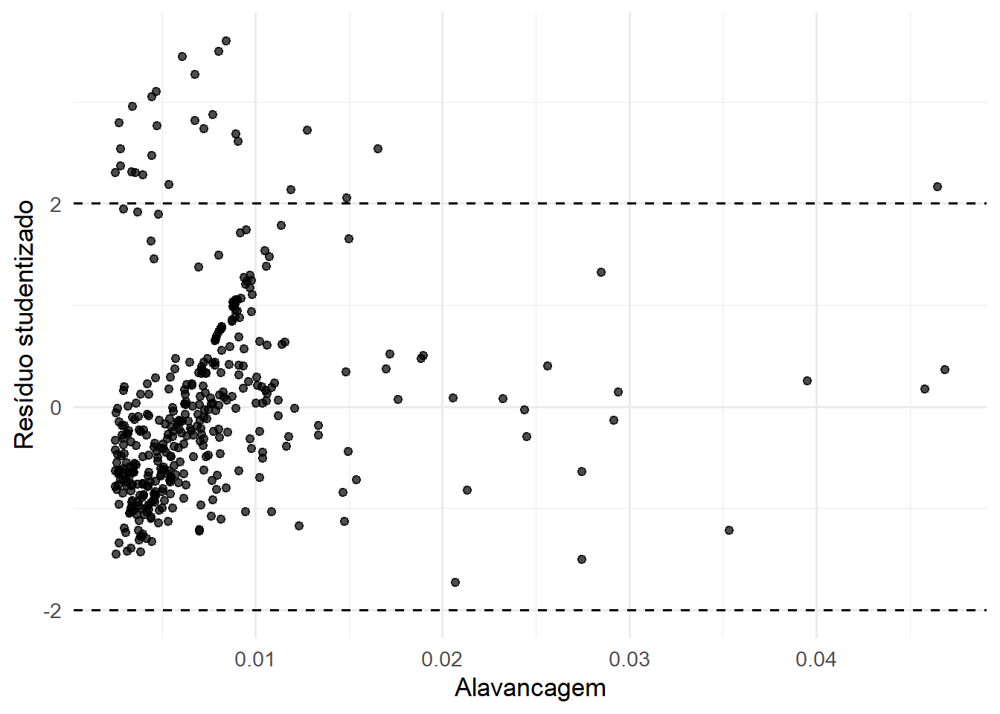
Observações localizadas simultaneamente em regiões de elevada alavancagem e elevados resíduos studentizados merecem investigação adicional.
19.8.6 Influência sobre coeficientes e previsões
Além da distância de Cook, podemos investigar a influência das observações sobre coeficientes específicos e sobre as previsões produzidas pelo modelo.
A Figura abaixo apresenta os valores absolutos de DFBETAS para o coeficiente associado à variável Rating.
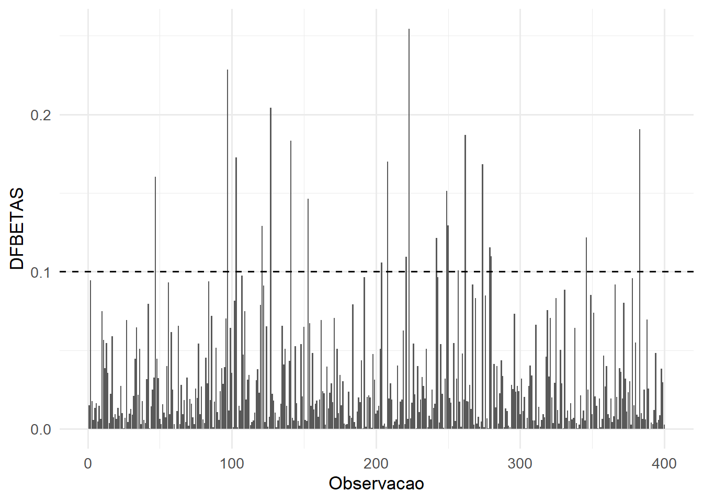
A Figura abaixo apresenta os valores absolutos de DFFITS.
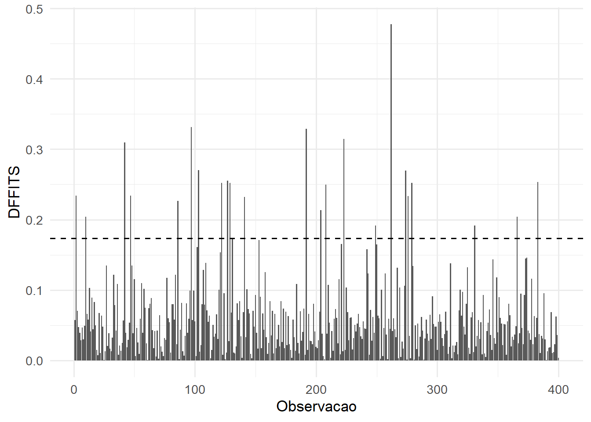
Essas medidas complementam a distância de Cook, permitindo identificar observações que afetam parâmetros específicos ou previsões individuais.
19.8.7 Síntese da análise
Uma análise diagnóstica completa raramente depende de uma única medida ou gráfico.
Neste exemplo, avaliamos:
- linearidade por meio dos resíduos versus ajustados;
- homocedasticidade por inspeção gráfica e teste de Breusch–Pagan;
- normalidade por gráfico Q-Q e teste de Shapiro–Wilk;
- independência por meio do teste de Durbin–Watson;
- multicolinearidade por meio dos VIFs;
- influência global por meio da distância de Cook;
- influência sobre coeficientes por meio dos DFBETAS;
- influência sobre previsões por meio dos DFFITS;
- influência potencial por meio da alavancagem e dos resíduos studentizados.
O objetivo não é decidir automaticamente se um modelo está correto ou incorreto. O diagnóstico busca identificar possíveis limitações, compreender a qualidade do ajuste e avaliar a robustez das conclusões obtidas.
Assim como ocorre na seleção de modelos e na inferência estatística, a análise diagnóstica deve ser interpretada à luz do contexto da aplicação, do conhecimento substantivo do problema e dos objetivos do estudo.